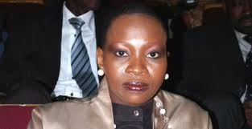
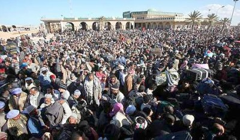

Case dropped against former IMF boss after Guinean woman's accusations found wanting
By Peter Uduehi
The case against former IMF chief
Dominique Strauss-Kahn seems to have fallen apart and has led a U.S.
judge to release him from house arrest and had his $6m cash bail and
bond returned.
Prosecutors say Strauss-Kahn should be freed "on his own recognisance," meaning he must simply promise to appear in court.
he
former IMF boss is accused of sexually assaulting Nafissiatu Diallo, a
Guinean (West African) hotel maid in New York in May, but the case is
reported to be collapsing as the veracity of his accuser is now in
doubt.
Apart from what some say is an
unbelievable tale that the 62-year-old Strauss-Khan is agile enough to
chase the younger maid in the hotel hallway, force down her panties and
make her perform oral sex, the Guinean has also recanted her earlier
claim that she was raped while in her home country of Guinea before she
entered the United States - where her asylum application papers with
the U.S. Immigration points to that fact. This makes her a liar and has
brought her credibility into serious question.
Also questioned by many in France,
where he's a leading candidate against Nikoli Sarkozy for the French
presidency next year, is the fact that Strauss-Khan was set-up for
disgrace and his chances ruoned by those loyal to Sarkozy, if not the
French president himself. The former IMF boss has said previously that
one factor counting against him as a politician is that he's Jewish.
Strauss-Khan will appear in a New York
court again July 18 and even though he has been released cannot leave
the U.S. until the matter is legally over for him.
"I want to remind all of you that at
each appearance in the last six weeks, we asked you and asked the world
not to rush to judgement - now I think you can understand why," said Mr
Strauss-Kahn's lawyer, William Taylor, after leaving the courtroom.
"We believe the next step will lead to the complete dismissal of the charges," he added.
"I understand that the circumstances
of this case have changed substantially and I agree the risk that he
would not be here has receded quite a bit. I release Mr Strauss-Kahn at
his own recognisance," Justice Michael Obus told the court.
In earlier court hearings, prosecutors
had spoken of the strength of their case. One attorney said the proof
against him was "substantial".
After the recent hearing, the alleged
victim's lawyer, Kenneth P Thomson, maintained that his client's story
was genuine and that Mr Strauss-Kahn was guilty of sexual assault
charges.
"The only defence Dominique Strauss-Kahn has is that this sexual encounter was consensual. That it a lie," he said.
However, law enforcement officials have now told US media the accuser has repeatedly lied since the alleged attack on 14 May.
But Mr Thompson defended his client's
story on Friday, offering up graphic details of the alleged encounter
between Mr Strauss-Kahn and the maid.
"From day one she has described a
violent sexual assault that Dominique Strauss-Kahn committed against
her," Mr Thompson said, adding that Mr Strauss-Kahn bruised the maid's
body and threw her to the floor.
"She has never once changed a single thing about that account. The district attorney knows that," he added.
Mr Thompson said that though the maid "may have made some mistakes", that does not mean the rape never occurred.
Mr Strauss-Kahn has been under house arrest in a New York apartment since posting a $6m cash bail and bond in May.
He is charged with seven counts
including four more serious felony charges - two of criminal sexual
acts, one of attempted rape and one of sexual abuse - plus three
misdemeanour offences, including unlawful imprisonment.
Mr Strauss-Kahn, who resigned as head of the International Monetary Fund to defend himself, vigorously denies the charges.
Libya fallout: Black and Arab Africans clash on Libya-Tunisia border
By Peter Uduehi
Reports are reaching us that speak of clashes between Black and Arab Africans on the Tunisia-Libya border among migrants fleeing the conflict in Libya.
Our correspondent says he witnessed a skirmish started by a group of Libyans who attacked some migrants from Ghana leading to fistfights. The Libyans, fleeing their homeland, had wrongly accusedthe Ghanaians of been part of Col. Muammar Gadhafi's borrowed army or mercenaries deployed into Libya to quell the unrest currently brewing in the North African country. In the early days of the protests against the Gadhafi regime many Libyans told foreign reporters that they saw Black Africans, mainly from Chad, Niger and Sudan, shooting at them as the unrest raged throughout the country. Some reports have claimed that Col. Gadhafi had paid up to $100 million to the Chadian government to send troops to prop up his regime. Other reports within Africa say that retired servicemen from Kenya, Niger, Chad, Zimbabwe and Tanzania have been part of the mercenary force rushed into Libaya to save the Gadhafi embattled regime.
Asked if the altercation between the Arab and Black Africans are still raging, our correspondent Jide Martins said what he had first witnessed recently was a misunderstanding based on "understandable raw feelings among the Libyans fleeing their country. They saw the
Blacks and were reminded of the people sent into Libya by Gadhafi and they allowed their emotions, coupled with their displacement to get the better of them. That was what I think happened," Martins said. He said the whole matter has been cleared up now and that the United Nations camp set up for the migrants is calm. Many of the Black migrants (who come from other African countries) in the camp have themselves been living in Libya until the current unrest.
Lights out in north of
Ivory Coast blamed on politics
United Nations officials on the ground in the Ivorian capital Abidjan are blaming vicious politics for the electricity blackout the north of the country is presently experiencing.
The embattled recalcitrant president Laurent Gbagbo, who is refusing to give up power after an election observers believe he lost to his rival Alassange Quattara, is said to be responsible for the blackout. Quattara is holed up in a hotel in the capital with UN forces' protection. From time t time the UN forces, on a peace mission, have complained of harassment by forces loyal to president Gbagbo. Quattara is supported by the mostly muslim north where electricity has been cut off while Gbagbo's base is in the mostly Christian south. Correspondents say the blackout is punishment for the north for their support of Quattara.
Is the CIA right about Nigeria?
By Peter Uduehi
As
tens of thousand fled their homes due to violence in Northern Nigeria
after the recent poll in the country, re-elected president Goodluck
Jonathan says the disturbances were “not a spontaneous reaction”.
Stressing
some big wigs were behind the violence, he said in his usual reserved
and gentle way that "I don't want to accuse anybody but we believe that
people must be behind this," he opined in a CNN interview.
Muhammadu
Buhari, runner-up of the poll, has denied involvement in instigating,
according to him, the "sad, unfortunate and totally unwarranted"
situation. He also said that the election was rigged in favour of
Jonathan, a charge refuted by almost every international observer who
stress it’s the most fair and free election to date in Nigeria’s
checkered history with politics. However, he urged his supporters to
refrain from attacks, saying: "It is wrong for you to allow miscreants
to infiltrate your ranks and perpetrate such dastardly acts as the
mindless destruction of worship places.
Hundreds
of people have died as a result of the recent violence, according to
the Red Cross as did four years ago when Umaru Yaradua of the People’s
Democratic Party (PDP) was elected under heavy suspicion by the
international community that the poll was clearly rigged in his favour.
But this time, observers say, the country’s electoral commission was
near perfect. So why the needless violence and killing of innocent
civilians shortly after what has been described as hitch-free?
Why
should Nigerians be subjected to this type of macabre torture soon
after what is supposed to give them the greatest joy of choosing their
leaders?
Going
by Jonathan’s remarks, it is clear that a few people know why, and what
they are saying points to the refusal by a section of the country
feeling that sore that a member of their region or tribe, and for
religious reasons, has the exclusive preserve and God-given right to
rule Africa’s most populous nation.
In
a BBC interview of some of the violent protesters, one youth could be
heard exuding an almost macabre hatred for southerners, saying “we
cannot vote for them, we do not vote for southerners and so we cannot be
under them”, his voice cranking up into a violent crescendo of
embittered rage. It’s the kind of rage that makes one ask the question:
where does this type of anger from a fellow citizen come from? What’s
the genesis of this type of rage? And at what price should Nigerians
demand their freedom from this sordid affair every four years? Two
National Youth Service Corps volunteers in the North, southerners who
have no axe to grind other than how better their country should be run,
were mercilessly killed by the baying protesters and churches burned by
Boko Haram militia, a group of religious bigots and political bandits
who frown at southerners and Western education (more embraced by people
of the South).
In
2000 the American Central Intelligence Agency (CIA) predicted that
Nigeria, by 2015, will implode and eventually be divided along the lines
of Sudan (which has just happened) because of the multiplicity of the
internal contradictions embroiling the country. Principal among these
dividing fractures is religion, with the south mainly Christian and the
north mainly Muslim. It is complicated by ethnic divisions pervasive in
both regions so much so that the ruling PDP has designed a rotational
presidency among its ranks in the six political zones in the country.
As much as some people would like to see a united Nigeria, many people
think the CIA predictions may come to pass after all, considering the
perennial violence following elections in Nigeria.
Cameroon: Journalist Nkamtchuen charged
By Peter Uduehi
Cameroonian journalist Raphael Nkamtchuen's recent arrest by state security services is raising concern in many quarters, including the The Committee to Protect Journalists who has demanded answers from the Paul Biya regime.
The organisation along with local journalists fear Nkamtchuen's arrest is an indication that the government has not ceased harassing journalists who are essential as watchdogs in Cameroon's corruption-ridden society.
A public prosecutor is charging the journalist, editor of the periodical La Boussole with "unauthorized communication with a detainee" and "possession of administrative documents labeled 'confidential". The charges are based on an October 27, 2009, letter that allegedly leaked from the office of top presidential adviser Laurent Esso. Guards found the letter on Nkamtchuen as he left Yaoundé's Kondengui Prison following an interview with jailed former Finance Minister Polycarpe Abah Abah on February 17. Nkamtchuen told authorities the letter was leaked to him and that he carried it into the prison.
The vice premier for justice Amadou Ali is said to have been informed in the alleged letter from Esso that president Biya had already approved his proposal to arrest a number of public officials for corruption, including Abah Abah, who was convicted of graft through Operation Sparrohawk, an anti-corruption regime of the government. Esso has not publicly reacted to the allegations, according to local journalists.
Nkamtchuen, was detained for six days by Cameroon's military police before he was charged. He was free pending trial on March 24, but according to reports has gone into hiding after receiving threatening phone calls.
"We are concerned for the safety of Raphaël Nkamtchuen, who has gone into hiding after being charged in connection to his investigation into possible government abuse of power," said CPJ (Committee to Protect Journalists) Africa Advocacy Coordinator Mohamed Keita. "We hold the government responsible for his safety and well-being."
Nkamtchuen is disputing all the charges against him saying it was the third time he had visited Abah Abah in Kondengui Prison and that prison guards had never required any special authorization to communicate with a detainee previously, he reportedly told CPJ. However, a prison guard was arrested on charges of conspiring to facilitate his entry, he said.
Recently, Esso ordered the arrests of four journalists after another document purported to have been leaked from his office detailing a kickbacks scheme surfaced, according to CPJ research. The arrests lead to the death in custody of one of the journalists, Germain Cyrille Ngota.